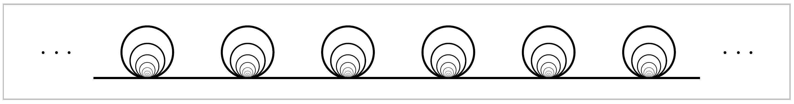

Exercises#
1. For a covering space \(p:\tilde{X} \rightarrow X\) and a subspace \(A\subset X\), let \(\tilde{A}=p^{-1}(A)\). Show that the restriction \(p:\tilde{A} \rightarrow A\) is a covering space.
2. Show that if \(p_1:\tilde{X}_1 \rightarrow X_1\) and \(p_2:\tilde{X}_2 \rightarrow X_2\) are covering spaces, so is their product \(p_1 \times p_2: \tilde{X}_1 \times \tilde{X}_2 \rightarrow X_1 \times X_2\).
3. Let \(p:\tilde{X} \rightarrow X\) be a covering space with \(p^{-1}(x)\) finite and nonempty for all \(x \in X\). Show that \(\tilde{X}\) is compact Hausdorff iff \(X\) is compact Hausdorff.
4. Construct a simply-connected overing space of the space \(X \subset \mathbb{R}^3\) that is the union of a sphere and a diameter. Do the same when \(X\) is the union of a sphere and a circle intersecting it in two points.
5. Let \(X\) be the subspace of \(\mathbb{R}^2\) consisting of the four sides of the square \([0,1] \times [0,1]\) together with the segments of the vertical lines \(x=\frac{1}{2},\frac{1}{3},\frac{1}{4},\cdots\) inside the square. Show that for every covering spce \(\tilde{X} \righytarrow X\) there is some neighborhood of the left edge of \(X\) that lifts homeomorphically to \(\tilde{X}\). Deduce that \(X\) has no simply-connected covering space.
6. Let \(X\) be the shrinking wedge of circles in Example 1.25, and let \(\tilde{X}\) be its covering space shown in the figure below.
{kind=link}
Construct a two-sheeted covering space \(Y \rightarrow \tilde{X}\) such that the composition \(Y \rightarrow \tilde{X} \rightarrow X\) of the two covering spaces is not a covering space. Note that a composition of two covering spaces does have the unique path lifting property, however.

Let \(Y\) be the quasi-circle shown in the figure, a closed subspace of \(\mathbb{R}^2\) consisting of a portion of the graph of \(y=\sin (1/x)\), the segment \([-1,1]\) in the \(y\)-axis, and an arc connecting these two pieces. Collapsing the segment of \(Y\) in the \(y\)-axis to a point gives a quotient map \(f:Y\rightarrow S^1\). Show that \(f\) does not lift to the covering space \(\mathbb{R} \rightarrow S^1\), even though \(\pi_1(Y)=0\). Thus local path-connectedness of \(Y\) is a necessary hypothesis in the lifting criterion.
8. Let \(\tilde{X}\) and \(\tilde{Y}\) be simply-connected covering spaces of the path-connected, locally path-connected space \(X\) and \(Y\). Show that if \(X \simeq Y\) then \(\tilde{X} \simeq \tilde{Y}\). [Exercise 11 in Chapter 0 may be helpful.]
9. Show that if a path-connected, locally path-connected space \(X\) has \(\pi_1(X)\) finite, then evety map \(X \rightarrow S^1\) is nullhomotopic. [Use the covering space \(\mathbb{R} \rightarrow S^1\).]
10. Find all the connected \(2\)-sheeted and \(3\)-sheeted covering spaces of \(S^1 \vee S^1\), up to isomorphism of covering spaces without basepoints.
11. Construct finite graphs \(X_1\) and \(X_2\) having a common finite-sheeted covering space \(\tilde{X}_1=\tilde{X}_2\), but such that there is no space having both \(X_1\) and \(X_2\) as covering spaces.
12. Let \(a\) and \(b\) be the generators of \(\pi_1(S^1 \vee S^1)\) corresponding to the two \(S^1\) summands. Draw a picture of the covering space of \(S^1 \vee S^1\) corresponding to the normal subgroup generated by \(a^2,\,b^2\), and \((ab)^4\), and prove that this covering space is indeed the correct one.
13. Determine the covering space of \(S^1 \vee S^1\) corresponding to the subgroup of \(\pi_1(S^1 \vee S^1)\) generated by the cubes of all elements. The covering space is \(27`0sheeted and can be drawn on a torus so that the complementary regions are nine triangles with edges labeled :math:`aaa\), nine triangles with edges labeled \(bbb\), and nine hexagons with edges labeled \(ababab\). [For the analogous problem with sixth powers instead of cubes, the resulting covering space would have \(2^{28}3^{25}\) sheets! And for \(k^{th}\) powers with \(k\) sufficiently large, the covering space would have infinitely many sheets. The underlying group theory question here, whether the quotient of \(\mathbb{Z} * \mathbb{Z}\) obtained by factoring out all \(k^{th}\) powers is finite, is known as Burnside’s problem. It can also be asked for a free group on \(n\) generators.]
14. Find all the connected covering spaces of \(\mathbb{R}P^2 \vee \mathbb{R}P^2\).
15. Let \(p:\tilde{X} \rightarrow X\) be a simply-connected covering space of \(X\) and let \(A \subset X\) be a path-connected, locally path-connected subspace, with \(\tilde{A} \subset \tilde{X}\) a path-component of \(p^{-1}(A)\). Show that \(p:\tilde{A}\rightarrow A\) is the covering space corresponding to the kernel of the map \(\pi_1(A) \rightarrow \pi_1(X)\).
16. Given maps \(X \rightarrow Y \rightarrow Z\) such that both \(Y\rightarrow Z\) and the composition \(X\rightarrow Z\) are covering spaces, show that \(X \rightarrow Y\) is a covering space if \(Z\) is locally path-connected, and show that this covering space is normal if \(X \rightarrow Z\) is a normal covering space.
17. Given a group \(G\) and a normal subgroup \(N\), show that there exists a normal covering space \(\tilde{X} \rightarrow X\) with \(\pi_1(X) \approx,\, \pi_1(\tilde{X}) \approx N\), and deck transformation group \(G(\tilde{X}) \approx G/N\).
18. For a path-connected, locally path-connected, and semilocally simply-connected space \(X\), call a path-connected covering space \(\tilde{X} \rightarrow X\) abelian if it is normal and has abelian deck transformation group. Show that \(X\) has an abelian covering space that is a covering space of every other abelian covering space of \(X\), and that such a ‘universal’ abelian covering space is unique up to isomorphism. Describe this covering space explicitly for \(X=S^1 \vee S^1\) and \(X=S^1 \vee S^1 \vee S^1\).
19. Use the preceding problem to show that a closed orientable surface \(M_g\) of a genus \(g\) has a connected normal covering space with deck transformation group isomorphic to \(\mathbb{Z}^n\) (the product of \(n\) copies of \(\mathbb{Z}\)) iff \(n \leq 2g\). For \(n=3\) and \(g \geq 3\), describe such a covering space explicitly as a subspace of \(\mathbb{R}^3\) with translations of \(\mathbb{R}^3\) as deck transformations. Show that such a covering space in \(\mathbb{R}^3\) exists iff there is an embedding of \(M_g\) in the \(3\)-torus \(T^3 = S^1 \times S^1 \times S^1\) such that the induced map \(\pi_1(M_g) \rightarrow \pi_1(T^3)\) is surjective.
20. Construct nonnormal covering spaces of the Klein bottle by a Klein bottle and by a torus.
21. Let \(X\) be the space obtained from a torus \(S^1 \times S^1\) by attaching a Möbius band via a homeomorphism from the boundary circle of the Möbius band to the circle \(S^1 \times \{x_0\}\) in the torus. Compute \(\pi_1(X)\), describe the universal cover of \(X\), and describe the action of \(\pi_1(X)\) on the universal cover. Do the same for the space \(Y\) obtained by attaching a Möbius band to \(\mathbb{R}P^2\) via a homeomorphism from its boundary circle to the circle in \(\mathbb{R}P^2\) formed by the \(1\)-skeleton of the usual CW structure on \(\mathbb{R}P^2\).
22. Given covering space actions of groups \(G_1\) on \(X_1\) and \(G_2\) on \(X_2\), show that the action of \(G_1 \times G_2\) on \(X_1 \times X_2\) defined by \((g_1,g_2)(x_1,x_2)=(g_1(x_1),g_2(x_2))\) is a covering space action, and that \((X_1 \times X_2)/(G_1 \times G_2)\) is homeomorphic to \(X_1 / G_1 \times X_2/G_2\).
23. Show that if a group \(G\) acts freely and properly discontinuously on a Hausdorff space \(X\), then the action is a covering space action. (Here ‘properly discontinuously’ means that each \(x \in X\) has a neighborhood \(U\) such that \(\{g\in G \mid U \cap g(U) \neq \emptyset\}\) is finite.) In particular, a free action of a finite group on a Hausdorff space is a covering space action.
24. Given a covering space action of a group \(G\) on a path-connected, locally path-connected space \(X\), then each subgroup \(H \subset G\) determines a composition of covering spaces \(X \rightarrow X/H \rightarrow X/G\). Show:
Every path-connected covering space between \(X\) and \(X/G\) is isomorphic to \(X/H\) for some subgroup \(H \subset G\).
Two such covering spaces \(X/H_1\) and \(X/H_2\) of \(X/G\) are isomorphic iff \(H_1\) and \(H_2\) are conjugate subgroups of \(G\).
The covering space \(X/H \rightarrow X/G\) is normal iff \(H\) is a normal subgroup of \(G\), in which case the group of deck transformations of this cover is \(G/H\).
25. Let \(\varphi: \mathbb{R}^2 \rightarrw \mathbb{R}^2\) be the linear transformation \(\varphi (X,y) = (2x, y/2)\). This generates an action of \(\mathbb{Z}\) on \(X=\mathbb{R}^2-\{0\}\). Show this action is a covering space action and compute \(\pi_1(X/\mathbb{Z})\). Show the orbit space \(X/\mathbb{Z}\) is non-Hausdorff, and describe how it is a union of four subspaces homeomorphic to \(S^1 \times \mathbb{R}\), coming from the complementary components of the \(x\)-axis and the \(y\)-axis.
26. For a covering space \(p:\tilde{X} \rightarrow X\) with \(X\) connecetd, locally path-connected, and semilocally simply-connected, show:
The components of \(\tilde{X}\) are in one-to-one correspondence with the orbits of the action of \(\pi_1(X,x_0)\) on the fiber \(p^{-1}(x_0)\).
Under the Galois correspondence between connected covering spaces of \(X\) and subgroups of \(\pi_1(X,x_0)\), the subgroup corresponding to the component of \(\tilde{X}\) containing a given lift \(\tilde{x}_0\) of \(x_0\) is the stabilizer of \(\tilde{x}_0\), the subgorup consisting of elements whose action on the fiber leaves \(\tilde{x}_0\) fixed.
27. For a universal cover \(p:\tilde{X} \rightarrow X\) there are two actions of \(\pi_1(X,x_0)\) on the fiber \(p^{-1}(x_0)\). The first is the action defined on page 69 in which the element of \(\pi_1(X,x_0)\) determined by a loop \(\gamma\) sends \(\tilde{\gamma}(1)\) to \(\tilde{\gamma}(0)\) for each lift \(\tilde{\gamma}\) of \(\gamma\) to \(\tilde{X}\), and the second is the action given by restricting deck transformations to the fiber (see Proposition 1.39). Show that these two actions are different when \(X=S^1\vee S^1\) and when \(X=S^1 \times S^1\) and determine when the two actions are the same. [This is a revised version of the original form of this exercise.]
28. Show that for a covering space action of a group \(G\) on a simply-connected space \(Y\), \(\pi_1(Y/G)\) is isomorphic to \(G\). [If \(Y\) is locally path-connected, this is a special case of part (c) of Proposition 1.40]
29. Let \(Y\) be path-connected, locally path-connected, and simply-connected, and let \(G_1\) and \(G_2\) be subgroups of \(\text{Homeo}(Y)\) defining covering space actions on \(Y\). Show that the orbit spaces \(Y/G_1\) and \(Y/G_2\) are homeomorphic iff \(G_1\) and \(G_2\) are conjugate subgroups of \(\text{Homeo}(Y)\).
30. Draw the Cayley graph of the group \(\mathbb{Z} * \mathbb{Z}_2 = \langle a,b \mid b^2 \rangle\).
31. Show that the normal covering spaces of \(S^1 \vee S^1\) are precisely the graphs that are Cayley graphs of groups with two generators. More generally, the normal covering spaces of the wedge sum of \(n\) circles are the Cayley graphs of groups with \(n\) generators.
32. Consider covering spaces \(p:\tilde{X} \rightarrow X\) with \(\tilde{X}\) and \(X\) connected CW complexes, the cells of \(\tilde{X}\) projecting homeomorphically onto cells of \(X\). Restricting \(p\) to the \(1\)-skeleton then gives a covering space \(\tilde{X}^1 \rightarrow X^1\) over the \(1\)-skeleton of \(X\). Show:
Two such covering spaces \(\tilde{X}_1 \rightarrow X\) and \(\tilde{X}_2 \rightarrow X\) are isomorphic iff the restrictions \(\tilde{X}^1_1 \rightarrow X^1\) and \(\tilde{X}^1_2 \rightarrow X^1\) are isomorphic.
\(\tilde{X} \rightarrow X\) is a normal covering space iff \(\tilde{X}^1 \rightarrow X^1\) is normal.
The groups of deck transformations of the coverings \(\tilde{X} \rightarrow X\) and \(\tilde{X}^1 \rightarrow X^1\) are isomorphic, via the restriction map.
33. In Example 1.44 let \(d\) be the greatest common divisor of \(m\) and \(n\), and let \(m'=m/d\) and \(n'=n/d\). Show that the graph \(T_{m,n}/K\) consists of \(m'\) vertices labeled \(a,\,n'\) vertices labeled \(b\), together with \(d\) edges joining each \(a\) vertex to each \(b\) vertex. Deduce that the subgroup \(K \subset G_{m,n}\) is free on \(dm'n'-m'-n'+1\) generators.